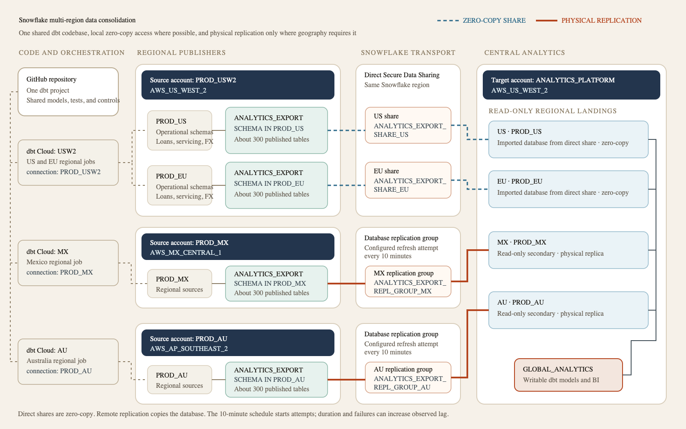

Case study · Data platform architecture
Snowflake multi-region data consolidation with dbt
Four regional lending datasets needed one governed analytics interface. US and EU data could remain in place and use local Snowflake Secure Data Sharing. MX and AU required physical replication into the analytics region. One dbt repository publishes the same contract across all four datasets, while daily controls turn a failed validation into an operational incident.
Architecture
Move data according to geography
The analytics account and the PROD_USW2 source account both run in AWS_US_WEST_2. That makes direct zero-copy shares the efficient path for US and EU. MX runs in AWS_MX_CENTRAL_1, and AU runs in AWS_AP_SOUTHEAST_2, so those datasets move through Snowflake replication groups.

| Path | Mechanism | Cost and freshness model |
|---|---|---|
| US + EU | Direct Secure Data Sharing exposes provider-owned tables through imported read-only databases. | No duplicate consumer storage or replication transfer. The analytics account pays query compute. |
| MX + AU | Replication groups copy the regional databases into read-only secondary databases. Analytics roles can access only the published ANALYTICS_EXPORT schemas. | The target pays replica storage, replication compute, transfer, and query compute. Freshness follows completed asynchronous refreshes. |
Control plane
One dbt codebase, four regional runs
Each dataset publishes roughly 300 equivalent tables covering loan origination, lifecycle events, sale, servicing, payments, payoff, and foreign exchange (FX). Three dbt Cloud connection environments reach the three source accounts; the USW2 environment runs separate US and EU selections. Region tags, source routing, and account-specific targets replace four forks of the transformation code.
ANALYTICS_EXPORT schema in each regional database.Remote replication operates at database scope, so the MX and AU paths copy more than the schema exposed to analytics. Least-privilege grants keep consumers inside ANALYTICS_EXPORT, while bounded refresh monitoring makes the additional transfer, storage, and compute visible. dbt can reconcile Snowflake object definitions and grants through controlled administrative operations, but Snowflake remains the replication engine and scheduler.
Data design
Keep lending and currency history comparable
Global keys include the region so equal source identifiers cannot collide. Loan facts retain source currency, source amount, and event time. FX enrichment adds the effective rate, rate date, reporting currency, and converted amount, which keeps every financial conversion reproducible.
Some event tables exceed 500 billion rows. The daily path therefore uses incremental processing and bounded controls instead of full refreshes and full-table scans. Checks focus on changed partitions, recent counts, key uniqueness, lifecycle totals, FX coverage, and source-to-export financial aggregates.
Operations
Treat freshness as observed state
MX and AU replication groups are configured with a 10-minute interval. This is an attempt schedule, not a ten-minute maximum-lag guarantee. Refreshes are asynchronous, and a long or failed refresh can move observed freshness beyond the interval. The audit therefore checks the latest completed refresh and its primary snapshot timestamp instead of trusting the schedule alone.
The daily audit also validates contract shape, expected objects, regional completeness, recent data composition, FX coverage, and access through every share or replica. Global models run only after those controls pass.
Each incident carries the region, object or replication group, failed control, observed snapshot time, and run link. The error is actionable at orchestration time rather than becoming a passive dashboard warning.
Engineering decisions
The operating trade-offs
| Decision | Benefit | Constraint |
|---|---|---|
| hybrid transport | Uses zero-copy access where possible and copies data only when geography requires it. | Local shares and remote replicas have different freshness and cost behavior. |
| one dbt repository | Applies one reviewed contract and control set to all regions. | Connections, selectors, and privileges must remain isolated by environment. |
| database-scoped remote replication | Preserves the regional database topology and Snowflake-managed refresh path. | Copies more than the exposed schema, increasing transfer and replica-storage cost. |
| read-only landings | Protects provider and replica state. | Downstream dbt models need a separate writable database. |
| bounded audits | Keeps daily validation practical at hundreds of billions of rows. | Watermarks, late-arriving events, retry rules, and audit windows must be explicit. |
Companion architecture. The project documents the detailed topology, dbt regional control pattern, replication freshness flow, and incident path.
{kind=link}